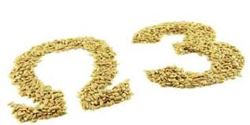

ACEITES |
|
Un Ingrediente IndispensableLos aceites están presentes en la cocina desde siempre, tanto para condimentar como para cocer los alimentos. Sin embargo, las personas que desean bajar de peso deben usarlos con moderación. La razón es simple: los aceites son cuerpos grasos puros, es decir que contienen casi un 100% de grasas. Esto quiere decir que, sea cual fuere su origen, el aceite aporta en una cucharada sopera 90 calorías, cantidad similar a la que proporcionan un huevo grande o una banana. Por eso, si se está haciendo dieta, lo mejor será utilizar el aceite con mucho cuidado. Ahora bien, veamos como se clasifican las grasas y en que categorías entran los distintos aceites que es posible encontrar hoy día en los supermercados.. |
|
Grasas Básicamente, las grasas están compuestas por acidos grasos, moléculas constituidas por una unión de átomos de carbono, hidrógeno y oxígeno. Pero, no todas las uniones son iguales y, justamente por ello se dividen en: saturados e insaturados (estos últimos a su vez se subdividen en monoinsaturados y poliinsaturados). Actualmente se sugiere que del total de grasas que se consuman, la tercera parte, sean poliinsaturadas, la tercera monoinsaturadas y el tercio restante saturadas (éstas últimas no deben superar el 10% de las calorías de la dieta). |
|